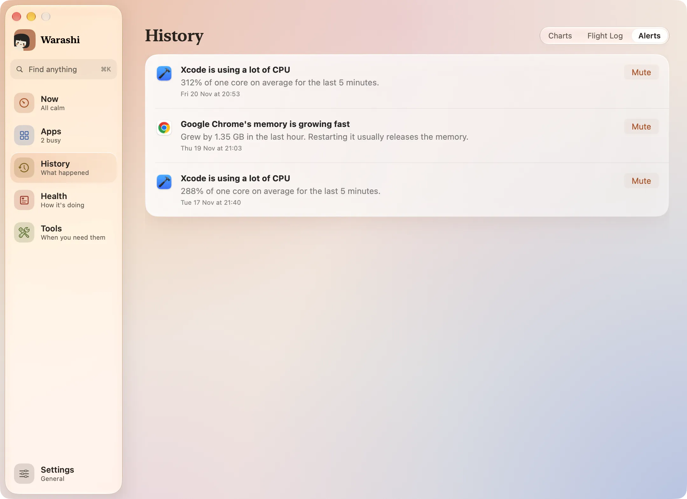

Waarschuwingen laten je weten wanneer iets je nodig heeft: één keer per probleem, niet elke minuut dat het duurt.
- Open Instellingen › Waarschuwingen
Druk op ⌘, en kies Waarschuwingen.


- Zet de waarschuwingen aan die je wilt
Elke schakelaar is één regel (zie de tabel hieronder). Op hol geslagen processor, geheugengroei, veel geheugengebruik en warmte staan vanaf het begin aan; de rest staat uit tot je ze aanzet. Elk probleem wordt één keer gemeld, en opnieuw pas nadat het is verdwenen en er een uur voorbij is.
- Sta meldingen toe
De eerste keer vraagt macOS of Warashi meldingen mag sturen. Klik op Sta toe. Als je nee zei, verschijnen waarschuwingen nog steeds in Warashi en de inkeping, en biedt Instellingen Open meldingsinstellingen.
- Lees en demp waarschuwingen
Kies Geschiedenis en dan de tab Waarschuwingen voor de laatste 30 dagen met het bewijs. Klik op Dempen om een waarschuwing voor die specifieke app te stoppen.


De waarschuwingen
| Waarschuwing | Wanneer |
|---|---|
| App gebruikt veel processor | Eén app 5 minuten achter elkaar boven 80% processor. |
| Appgeheugen groeit snel | Eén app groeit binnen een uur met 1 GB of meer. |
| Opstartschijf bijna vol | Minder dan 10 GB vrij op de opstartschijf. |
| Opstartschijf loopt vol | In het huidige tempo minder dan 10 GB vrij binnen 60 dagen. Heeft twee weken geschiedenis nodig. |
| Lang geheugentekort | Swap boven 20% van het geheugen, met geheugendruk, gedurende 30 minuten. |
| Mac wordt heet | macOS remt de Mac af om hem te koelen. |
| Batterij wordt heet | De batterij op 40 °C of meer gedurende 5 minuten achter elkaar. |
| Batterijconditie daalt | Conditie onder 80%, of 3 punten lager dan het beste van de laatste 30 dagen. |
| Verbinding verbroken | 2 minuten achter elkaar geen netwerk. |
| Openbaar IP-adres gewijzigd | Je openbare IP-adres is gewijzigd, bijvoorbeeld omdat een vpn wegviel. |
| VPN verbroken | Een VPN die je verkeer droeg, viel 20 seconden uit. Uitgelezen uit de eigen netwerkstatus van macOS, zonder netwerkverzoek. Een VPN die maar een deel van het verkeer draagt (split tunnel) wordt niet gezien. |
| Build zit mogelijk vast | Eén compiler (Swift, Clang, Rust en andere) 10 minuten op een volle kern zonder klaar te komen: het teken van een build die op één bestand vastzit, geen lange build. De waarschuwing noemt de compiler, zijn project en de codeeragent die hem startte, en de melding heeft Stop compiler. |
| Prullenmand wordt groot | De Prullenmand bevat meer dan de grootte die je kiest (1, 2, 5 of 10 GB; standaard 2 GB). In plaats van een melding komt er een kaart uit de inkeping (of, zonder inkeping, valt er een uit het menubalkonderdeel van Warashi) met de grootte van de Prullenmand: Prullenmand legen… vraagt één keer en verwijdert dan alles erin voorgoed; Negeer houdt het stil tot de Prullenmand weer met die grootte groeit, of een week lang. Vereist Volledige schijftoegang, omdat macOS de Prullenmand bewaakt. |
| Veel geheugengebruik | macOS heeft te weinig geheugen (geheugendruk kritiek, of 2 minuten hoog) en een app die je kunt stoppen gebruikt een tiende van je geheugen of meer. Het gaat om druk, niet om hoe vol de geheugenbalk eruitziet: geheugen vol cache is gezond. Er komt een kaart uit de inkeping (of, zonder inkeping, valt er een uit het menubalkonderdeel van Warashi) met maximaal drie van zulke apps en hun grootte (rood vanaf een vijfde van het geheugen). Stop gebruikt het eigen stoppen van de app, dus het vraagt naar niet-bewaard werk; een app die na 5 seconden nog open is, biedt Forceer stop aan. Stop alle doet hetzelfde voor elke app. Negeer opent een menu (in de inkeping negeert het gewoon voor nu): Negeer voor nu houdt het stil tot de druk 10 minuten normaal is geweest, en nooit binnen het uur. Het menu heeft ook Toon niet voor een app, en Zet deze waarschuwing uit. De eigen processen van macOS en Warashi worden nooit aangeboden. |
| Mac heeft het zwaar | De processor druk, het geheugen krap of de Mac die afremt om af te koelen, 2 minuten achter elkaar. Zegt waarom, zoals het Logboek. |
| Back-up te oud | Time Machine is ingesteld maar heeft een week geen back-up gemaakt. Eén keer per dag gecontroleerd; om de datum te zien is Volledige schijftoegang nodig. |
| macOS-update wacht | Een macOS-update wacht al een week. Eén keer per dag gecontroleerd. |
De waarschuwing Openbaar IP-adres
Alleen zolang deze waarschuwing aanstaat, vraagt Warashi elke 10 minuten en kort nadat je netwerk verandert aan 1.1.1.1 van Cloudflare om je openbare IPv4-adres. Het verzoek bevat niets over jou of je Mac. Verandert het adres, dan hoor je het nieuwe, met een herinnering om je VPN te controleren. Zet je de waarschuwing uit, dan stopt Warashi met vragen en vergeet hij het adres.
Als er iets niet klopt
- Geen meldingen: controleer Systeeminstellingen › Meldingen › Warashi. Warashi toont een notitie in Instellingen › Waarschuwingen als ze uit staan.
Meer in Problemen oplossen, of mail adam@warashi.app.